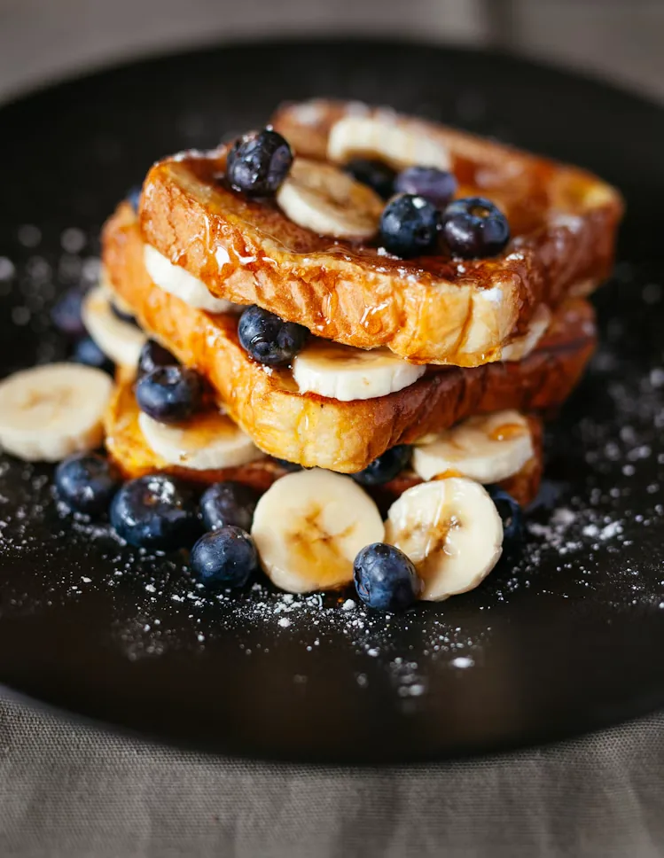
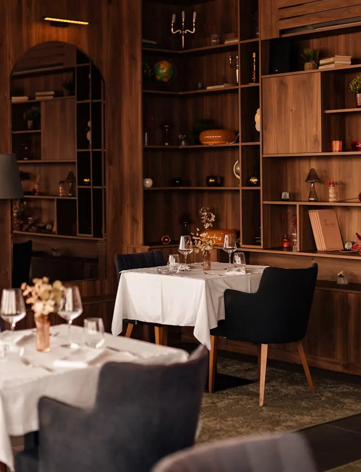
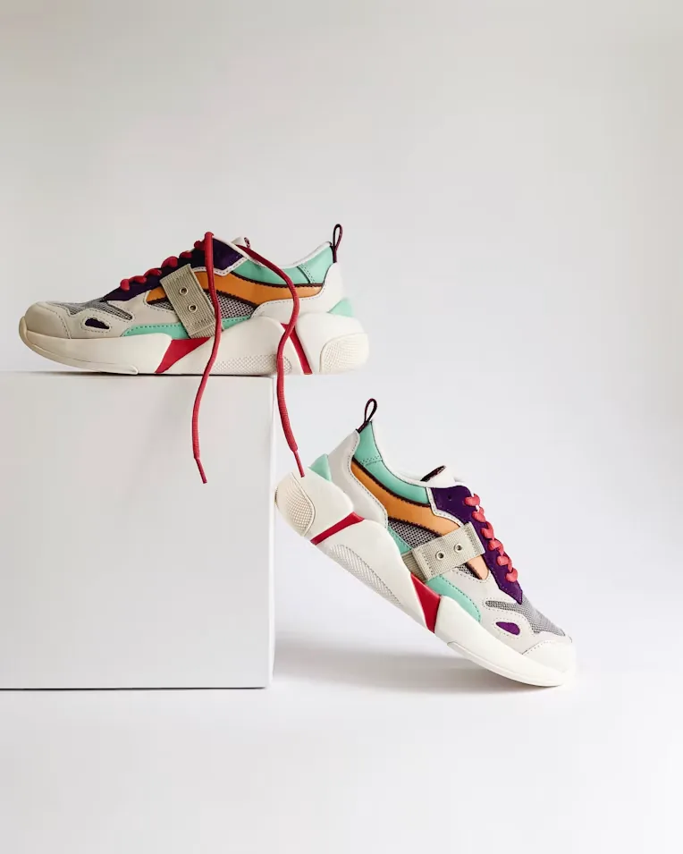
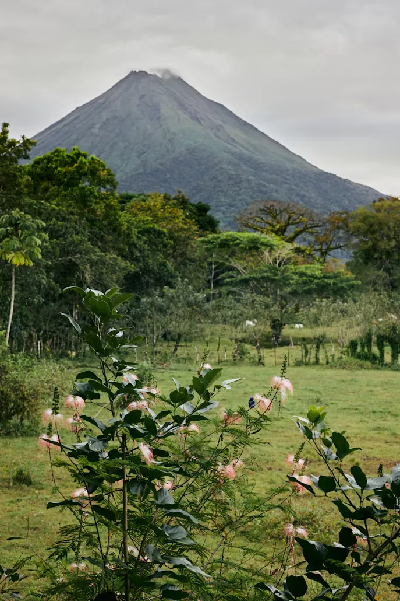
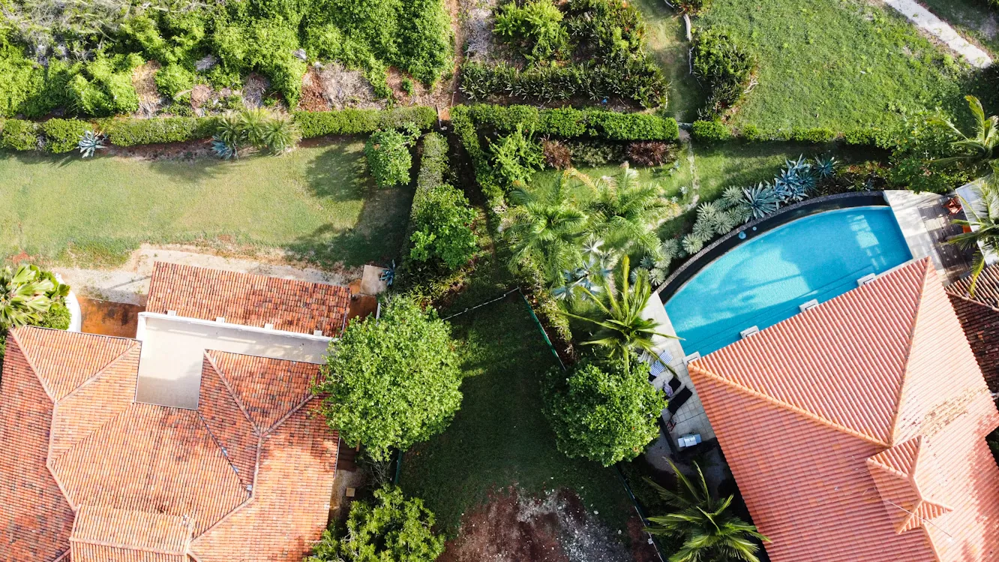
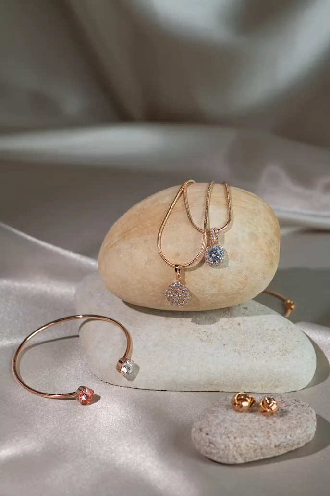
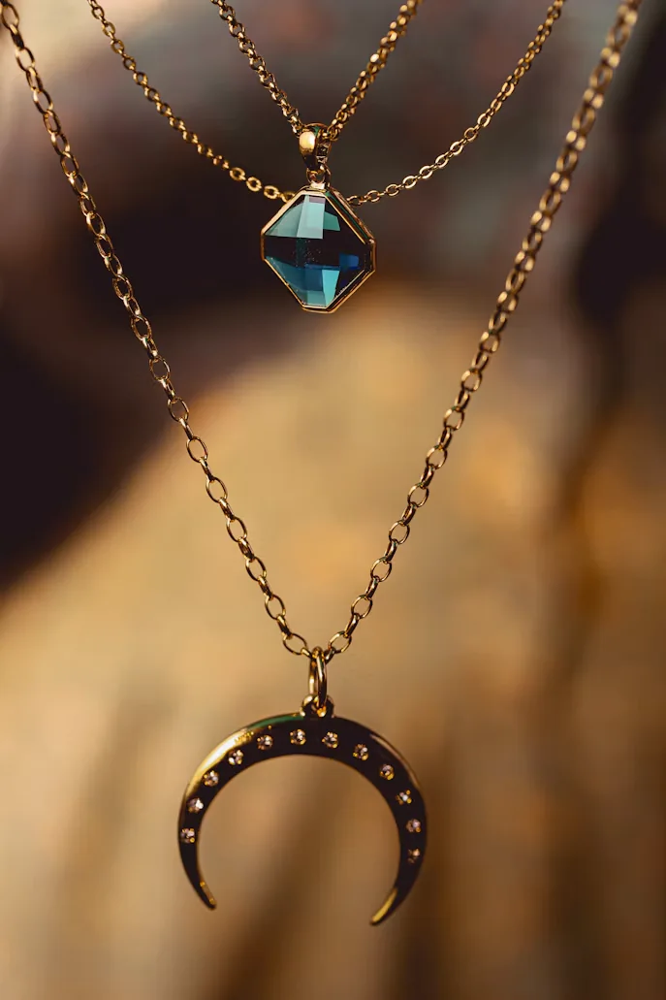
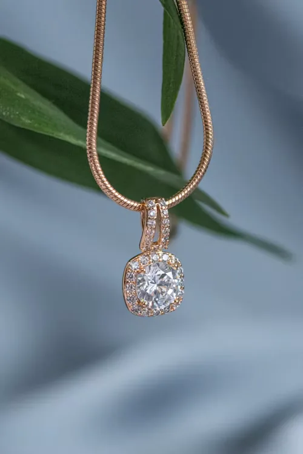
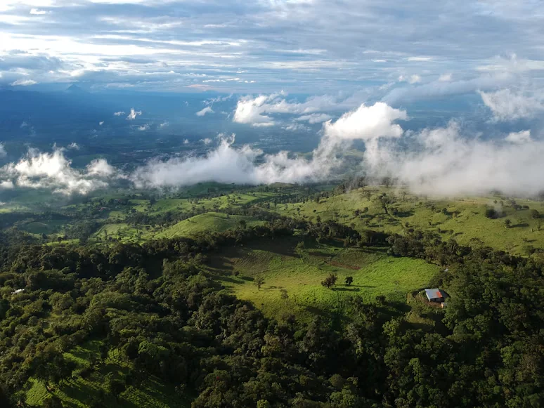

Productos para e-commerce
Fotografías de piezas individuales y conjuntos para fichas de producto, categorías y catálogos digitales. Definimos fondo, ángulos y detalles según el material.
FOTOGRAFÍA COMERCIAL · COSTA RICA





Un producto necesita imágenes que permitan apreciar su forma, detalle y uso. Planeamos fotografías para catálogos, tiendas virtuales y redes sociales según el tipo de negocio y el destino de cada imagen. Puedes cotizar una sesión sin contratar una página web.
QUÉ PODEMOS COTIZAR
Fotografías de piezas individuales y conjuntos para fichas de producto, categorías y catálogos digitales. Definimos fondo, ángulos y detalles según el material.
Imágenes que destacan texturas, tamaño, acabados y formas de uso. La preparación y el estilo se acuerdan antes de la sesión.
Fotografías para menús, páginas, redes y presentación de locales o propiedades. Las tomas con dron se evalúan según ubicación, permisos y condiciones.
Si tienes una tienda o catálogo, podemos preparar imágenes con proporciones y usos definidos desde el inicio. También podemos trabajar una selección específica para redes sociales.
MUESTRAS DE FOTOGRAFÍA
Explora imágenes para catálogos, redes y presentación de propiedades. Cada galería muestra distintos encuadres y detalles.



Texturas, luz y detalle para cada pieza.


Prendas, calzado y accesorios en contexto.


Café, hamburguesas, pizza y platos locales.

Propiedades y espacios con vistas de costa y montaña, fotografiados desde tierra y aire.
CÓMO COTIZAMOS
FOTOGRAFÍA + WEB
Cuando la fotografía se planifica junto con el sitio, podemos definir desde el inicio los formatos que usarán fichas de producto, banners y categorías. También puedes contratar solamente las imágenes y usarlas en una plataforma que ya tengas. Si estás pensando en vender en línea, conoce el servicio de páginas web y tiendas virtuales. También puedes revisar cómo influye la fotografía en el costo de una tienda.
PREGUNTAS FRECUENTES
Sí. La fotografía se cotiza de forma independiente de la página web. En el mensaje puedes indicar dónde usarás los archivos y qué productos o espacios quieres fotografiar.
Podemos evaluar tomas aéreas para propiedades o espacios cuando la ubicación, los permisos y las condiciones lo permiten. Se confirma en la propuesta de cada proyecto.
Se define según el número de productos, la variedad de tomas y el uso esperado. Antes de la sesión acordamos los entregables en la cotización.
HABLEMOS DE TUS PRODUCTOS
Puedes iniciar el asistente con fotografía comercial seleccionada o escribirnos directamente por WhatsApp.